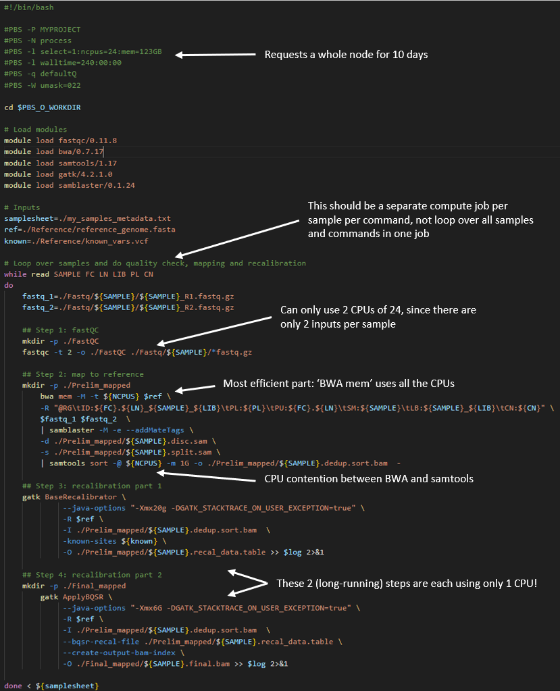

Working within walltime limits
Introduction
In this section, we will discuss ways of adapting your long walltime jobs from Artemis to NCI platforms.
Gadi walltime limit
The maximum walltime permitted on any of the Gadi HPC queues is 48 hours. In some cases, the walltime may be less (for example when requesting large numbers of nodes, or on copyq). See the Default walltime limit column of the queue limits tables to discover the maximum walltime that applies according to your resources requested.
Given that Artemis has much longer maximum walltimes, we understand this may generate some apprehension. Staff at both NCI and SIH can support you in adapting your workflows to NCI if you are still having difficulty after reviewing the suggestons below.
In short, there are 3 options to adapting a long-running Artemis workflow to NCI:
- Split your single large job Artemis into a series of smaller jobs on Gadi
- Use NCI’s Nirin cloud instead of Gadi
- Special exception to the Gadi walltime limit granted on a case-by-case basis
Option 1. Split or checkpoint your job
There are many advantages to splitting your job up into smaller discrete chunks.
- Checkpointing: if one of your jobs in a series fails, you only need to resubmit that discrete job script, rather than either the whole job or some finnicky “hashed out” version of your very long and complex workflow script. This simplifies debugging and rerunning, saves you hands-on time and walltime, minimises errors, and saves KSU
- Ease of code maintenance: changing part of workflow, for example adjusting parameters, input files or software versions, is far simpler to implement for shorter chunks of code than it is for a long and complex code with many steps
- Ease of benchmarking: Different stages of a complex workflow typically have different compute requirements, for example some long running single core tasks coupled with some GPU tasks, some high memory, some high CPU tasks etc. Benchmarking is more straightforward and informative when performed on discrete workflow chunks.
- Greater job efficiency: By benchmarking and optimising the resource configurations for each stage of the workflow, the series of jobs can be placed on an appropriate queue, and will not be reserving (and being charged for) unused resources. This will reduce KSU usage and resource wastage.
- Shorter queue times: Requesting resources for a shorter walltime will result in a shorter queue time. The NCI scheduler is geared towards favouring ‘wider and shorter’ jobs, ie more CPUs/nodes for less time, over ‘taller and slimmer’ jobs (ie fewer CPUs/nodes for a longer time). For example a job may queue for less time if it requests 48 CPU for 1 hour, compared to 1 CPU for 48 hours. Of course the queue is highly dynamic and this cannot be predicted or calculated ahead of time, but in general, shorter walltimes will lead to shorter queue times.
At the end of this section we will demonstrate a handful of examples of real long-running Artemis workflows that have been adapted to fit within Gadi’s shorter maximum walltime.
Option 2. Use Nirin
Your NCI KSUs can be used on Nirin as well as Gadi. Nirin has the advantage of theoretically infinite walltime, along with internet access which is another limitation of the Gadi compute queues.
As such, Nirin presents an easily accessible solution for users whose jobs are irreconcilably affected by the walltime and lack of internet access aspects of Gadi.
The Nirin quickstart guide walks you through the process of setting up your instance, including easy to follow screenshots for each step.
Option 3. Gadi special walltime request
If your job cannot be split/checkpointed into a series of shorter jobs, and the Nirin flavours are not suited to your compute needs, you can make a request to NCI for an increase to the walltime. NCI will ask you to provide details of your job including the relevant code saved on Gadi, as well as a description of why you require a lift to the walltime for this particular job.
From the Gadi queue limits page:
“If a higher limit on core count (PBS_NCPUS) and walltime is needed, please launch a ticket on NCI help desk with a short description of the reasons why the exception is requested. For example, a current scalability study suggests linear speedup at the core count beyond the current PBS_NCPUS limit. We will endeavour to help on a case-by-case basis”
Examples of split/checkpointed jobs
Example 1: A workflow with multiple discrete commands
In the field of genomics, the raw data is processed through a series of steps before the final output files are produced. Many groups perform all of these steps within a single, multi-command job, in order to only have to run one job to perform all the work.
By splitting apart each of these steps so that each is its own job, we can improve code manageability, reduce walltime, and increase overall processing efficiency.
While this does require some extra effort in terms of submitting multiple processing jobs rather than just one, the benefits described above far outweigh this. The burden of multiple job submission can be ameliorated by parallel processing per sample, and even further by a workflow manager such as Nextflow. For an example Nextflow genomics processing workflow, view this repository, and for parallel jobs on Gadi, see this section.
In the below Artemis script example, a samplesheet is read in containing metadata from about 10 samples to be analysed. Each sample has one pair of raw ‘fastq’ input files that are processed through an analysis loop containing 4 steps:
| Step | Task | Input | Walltime (hrs) | CPUs used |
|---|---|---|---|---|
| 1 | Quality check | Raw data | 2 | 2 |
| 2 | Map to reference | Raw data | 7 | 24 |
| 3 | Recalibration metrics | Output of step 2 | 5.5 | 1 |
| 4 | Apply recalibration | Output of steps 2 + 3 | 8.5 | 1 |
The total walltime is 23 hours per sample, so the requested walltime in the below script is 240 hours (10 samples x 24 hours per sample)
There are multiple inefficiencies within this method, giving rise to an inflated walltime requirement of ~ 1 day per sample plus a very low overall CPU utilisation of the job.

Now compare the above to a Gadi workflow, where each of these 4 steps are separated into their own job, with appropriate resource requests per job.
Job 1: Quality check
The fastQC tool can only run one thread per file. If you provide multiple files through globbing, and provide multiple CPUs to the -t flag, it will process as many files at a time as the value you have provided to -t.
So for the current example with 10 samples each with a pair of files, we have 20 files and can run this section of the analysis workflow with 20 CPU. In this way, 100% of the 20 CPU requested are utilised, unlike the Artemis script above, where only one sample’s fastq files at a time could be analysed and thus used only 8.3% (2 CPU used of 24 requested).
Job 2: Map to reference
The bwa tool can multi-thread, and tool benchmarking in peer-reviewed literature shows almost perfect scalability up to a thread count of 36. Gadi normal queue has 48 CPU per node, so you could run this job with 48 CPU, assigning 36 CPU to the mapping and 12 CPU to the piped sort command.
The key detail is to map each sample’s raw data as it’s own distinct job, instead of looping over each sample in series like the demo Artemis script. On Artemis, we can do this with job arrays but these are not available on Gadi. NCI and SIH recommend the use of nci-parallel (a custom wrapper utility for OpenMPI) for repeated runs of the same job script - see parallel jobs on Gadi for more details.
To avoid complicating this walltime section, we will provide an example of using a simple for loop for job submission. NOTE: loops should ONLY be used for a VERY SMALL NUMBER OF JOBS, and always include a sleep in the loop! NCI does monitor the login nodes and serial offending with long for loops will be targeted!
Note that the directive for job name is provided on the command line as an argument to qsub, the sample metadata is provided with the qsub -v varname="varvalue" syntax, and a 3-second sleep is used to avoid over-loading the job scheduler.
Script:
To submit 10 samples as separate jobs:
while read SAMPLE FC LN LIB PL CN
do
qsub -N map-${SAMPLE} -v SAMPLE="${SAMPLE}",FC="${FC}",LN="${LN}",LIB="${LIB}",PL="${PL}",CN="${CN}" step2_map.pbs
sleep 3
done < my_samples_metedata.txtJob 3 and 4: Recalibration metrics and apply recalibration
Note from the table above that these two steps do not multi-thread, and both have long walltimes. If you require a task like this in your workflow, it’s critical to interrogate the tool documentation for ways to increase throughput and efficiency.
Within this tool’s guide, we find there is a -L interval flag, which allows the tool to operate over discrete intervals of the reference file, rather than scanning the sample data over the whole reference file in one long running single-CPU task. The smaller the interval, the faster the run time, and the resultant output files are merged. This is an example of scatter-gather parallelism, where smaller sub tasks are scattered (distributed across the compute cluster) and then gathered (in this case, merged) to massively speed up a ‘tall and slim’ job (few resources consumed for a long time) into a ‘short and wide’ job (many resources consumed for a short time). Introducing parallelism into your job is crucial to get the most out of HPC.
Since this section is not a specialised bioinformatics training, we will not go into details for this tool here, but instead provide the main overview of steps and how with a bit of extra work, massive walltime savings can be made.
Steps 3 and 4 from the Artemis workflow are now executed as 5 jobs:
- Split the reference file into intervals using the tools’s split intervals function
- Run step 3 over each interval for each sample as a separate job. For 32 intervals and 10 samples, that is 32 * 10 = 320 single-CPU jobs. To do this, we would use
Open MPIvia nci-parallel - Merge the 32 outputs per sample into a single per-sample file with the tool’s merge function, using
nci-parallelto launch the 10 sample * 1 CPU jobs - Run step 4 over each interval for each sample as a separate job, using the merged output of step 3, another 32 * 10 = 320 single-CPU jobs launched in parallel by
nci-parallel - Merge the 32 outputs per sample into one final output file per sample with the tool’s merge function, using
nci-parallelto launch the 10 sample * 1 CPU jobs
As you can see, our workflow which was one long-running single job with very poor overall CPU utilisation has now been split into 7 jobs. This may sound tedious, yet the massively improved walltime and CPU utilisation will pay off, and you will get to your results in a much faster turnaround time with fewer KSU expended. In this example, walltime of 240 hours has been reduced to 10 hours!
| Step | Task | Input | Walltime (hrs) | CPUs used per job | CPUs total |
|---|---|---|---|---|---|
| 1 | Quality check | Raw data | 2 | 20 | 20 |
| 2 | Map to reference | Raw data | 7 | 48 | 480 |
| 3 | Split intervals | Reference file | <1 | 1 | 1 |
| 4 | Recalibration over intervals | Output of steps 2 + 3 | <1 | 1 | 320 |
| 5 | Merge recalibration tables | Output of step 4 | <1 | 1 | 10 |
| 6 | Apply recalibration over intervals | Output of steps 2 + 5 | <1 | 1 | 320 |
| 7 | Merge recalibrated final output | Output of step 6 | <1 | 1 | 10 |
Example 2: A long running command with innate checkpointing
Many commonly used tools have a built in option for saving the state of the process to a local file after a specified number of iterations in a repetitive task. This local file can be reloaded from disk and then the process can restart from where it previously left off. This is often called ‘checkpointing’. It’s a good idea to check the documentation of the tool you are using to see if it has some kind of checkpointing functionality built in since this greatly simplifies splitting up long running tasks into smaller chunks.
It is also recommended practice to use some kind of checkpointing because that way you can have a look at the output of jobs mid-way through to ensure that things are progressing as expected. Jobs can then be restarted with different parameters in case of unwanted results, thus saving resource allocations on your project.
Checkpointing is often very simple to implement in iterative parameter minimisation tasks such as machine learning pipelines that train or fine-tune a model. As such most machine learning packages will have options for checkpointing built-in. If you are building your own machine learning pipeline, simple instructions can be found for how to implement checkpointing in either TensorFlow here or PyTorch here.
In this example we’ll demonstrate a script with checkpointing that comes from the SIH developed aigis package. aigis is a tool that fine-tunes a detectron2 image segmentation machine learning model to detect trees and buildings in aerial imagery datasets.
Aerial imagery datasets can be quite large and fine-tuning detectron2 models using them can take a long time. Because of this the aigis fine-tuning script has a flag that will only let it run for a given number of iterations and save the fine-tuned model to disk. The script can then be restarted with the previous output given as input.
Below shows an example that runs the aigis script called fine_tune_detectron2.py on artemis. The PBS script looks like:
aigis_script.pbs
#! /bin/bash
#PBS -P SIHNextgen
#PBS -N fine_tune_example
#PBS -l select=1:ncpus=1:mem=16gb:ngpus=1
#PBS -l walltime=60:00:00
#PBS -q defaultQ
... # Module loading and setup go here
#Actually run the program
fine_tune_detectron2.py --dataset-name MyDataSet --train-json MyDataSet_Train.json --test-json MyDataSet_Test.json --max-iter 20000 --output-dir /project/aigis/model_fine_tuningThe full run of this script with 20000 iterations (--max-iter 20000) takes 60hrs, which is longer than the maximum walltime allowed on gadi, however we can change the number of iterations to 10000 and run the script twice with checkpointing.
To do this we would convert the above PBS script above to run on gadi and set the walltime to 31 hours and max-iter to 10000:
iteration1.pbs
#! /bin/bash
#PBS -P qc03
#PBS -N fine_tune_example_s1
#PBS -l walltime=31:00:00
#PBS -l ncpus=1
#PBS -l ngpus=1
#PBS -l mem=16GB
#PBS -q gpuvolta
#PBS -l wd
#PBS -lstorage=scratch/qc03
# NOTE: We use 31 hours waltime rather than 30
# to allow for overheads in running the script
... # Module loading and setup go here
fine_tune_detectron2.py --dataset-name MyDataSet --train-json MyDataSet_Train.json --test-json MyDataSet_Test.json --max-iter 10000 --output-dir /scratch/qc3/model_fine_tuningThen we can create a second pbs script that will pick up the output of the above and continue running for 10000 more iterations, again allowing half the walltime:
iteration2.pbs
#! /bin/bash
#PBS -P qc03
#PBS -N fine_tune_example_s2
#PBS -l walltime=31:00:00
#PBS -l ncpus=1
#PBS -l ngpus=1
#PBS -l mem=16GB
#PBS -q gpuvolta
#PBS -l wd
#PBS -lstorage=scratch/qc03
... # Module loading and setup go her - likely the same as above.
fine_tune_detectron2.py --dataset-name MyDataSet --train-json MyDataSet_Train.json --test-json MyDataSet_Test.json --max-iter 10000 --output-dir /scratch/qc3/model_fine_tuning --model-file /scratch/qc3/model_fine_tuning/MODEL_9999.pthWe can split this into as many shorter chunks as we would like, each starting from the output of the previous iteration. These can then be run sequentially by adding the flag -W depend=afterok:<jobid> to qsub for each script after the first at the gadi command prompt like so:
- Submit
iteration1.pbsat the command line
$ qsub iteration1.pbs
136554542.gadi-pbsgadi will return the jobid of the first script:
136554542.gadi-pbs. You will need the jobid of the first script to pass to the second qsub command.Now we tell the scond script to only execute after the job in the first script has finished:
$ qsub -W depend=afterok:136554542.gadi-pbs iteration2.pbsWhen you run qstat after this you will see the second script will have state H saying it has been held until iteration1.pbs has completed.
If you find the task of entering all these qsub commands tedious you can also make a bash script which you only need to run once to submit all the scripts:
submit_jobs_checkpointed.py
#!\bin\bash
# Submit first PBS script and save the run id to JOB1.
JOB1=$(qsub iteration1.pbs)
# Submit second pbs script and tell it to run only after the first has COMPLETED.
# Save the second run id to JOB2
JOB2=$(qsub -W depend=afterok:$JOB1 iteration2.pbs)You can of course chain as many iterations as necessary by continuing the above script.
Please be aware when you submit multiple long-running job scripts in this way that you should check the output from time to time to ensure everything is going smoothly, and kill the running script if it isn’t before fixing issues and restarting.
Example 3: Add your own checkpointing to existing code
Sometimes, you might be running your own software which has no checkpointing available. In this case it still might be possible to add checkpointing to your code yourself with a minimum of fuss, particularly if the code you are running is a long sequential pipeline where each step depends on the result of the previous one.
An effective way to add checkpointing to existing code is by saving the current state of the variables in your code to disk and then reloading them before starting the next step. The process of doing this is called serialisation and many different popular python packages (e.g. Numpy, Pandas) are able to do it with a simple command. Even native python variables (lists dicts etc. can be saved to disk using the pickle module).
An example of how you might do this comes from an astronomy pipeline (VAST) which reads thousands of sky images and makes multiple measurements from then followed by associating the stars in them with one another and then generating statistics on each star.
This simple pipeline is easily split into multiple steps: 1. Read images 2. Measure stars in images 3. Associate stars with one another between images 4. Generate statistics about the stars.
Here is a minimal example of the pipeline code between step 1 and 2. Step one is simple a function that returns a pandas DataFrame containing the image information and step 2 is another function that reads that dataframe before measureing stars in the image data from step 1.
pipeline.py
# Imports and setup at top of pipeline script
...
# Pipeline Step 1: read images
# Some call to a function that reads images into a pandas dataframe
images_df = get_parallel_assoc_image_df(
image_file_paths, ...
)
...
# Pipeline Step 2: make measurements
# Call a function that measures stars from our image data in images_df
sources_df = get_sources(
images_df, ...
)
...This can be split into python sripts step1 and step2 where the end of step1 involves writing the returned dataframe to disk and then the start of step2 involves reading the result from disk.
step1.py
# Pipeline Step 1: read images
# Some call to a function that reads images into a pandas dataframe
images_df = get_parallel_assoc_image_df(
image_file_paths, ...
)
...
images_df.write_parquet('images_df.parquet')step2.py
import pandas as pd
# Possible config setup here.
images_df = pd.read_parquet('images_df.parquet')
# Pipeline Step 2: make measurements
# Call a function that measures stars from our image data in images_df
sources_df = get_sources(
images_df, ...
)
...
pd.write_parquet(...)These scripts can then be run sequentially using the method described in the previous example.
Example 4: auto-resume within a persistent session
Persistent sessions
NCI have established persistent sessions to enable long running, low-resource tasks such as workflow management tools. We can use a persistent session to run a simple shell script that monitors your job periodically and resubmits the same script until successful completion. Similar to screen or tmux, you can log out of persistent sessions and return later to check on your task.
Workflow setup
This method requires 2 scripts:
- The shell script that is run within the persistent session
- This script submits the PBS job with
qsuband monitors withqstat - User sets the monitor frequency (no less than 10 minutes per NCI guidelines) and maximum number of resubmissions
- Script will exit when “success” is discovered, or after maximum retries
- The PBS job script, which contains directives and the actual commands to run the job. This script may:
- Embed the work directly (eg calling the application or task in-line), or
- Call an external script that runs the tool/commands
For this method to be successful, there must be:
- A checkpoint file that is updated by the job as the work progresses
- A method of reading the checkpoint file to determine where to continue from after a walltime failure
- A reliable method of determining “success”
Determinging previous job success
Robustly checking for job success is critical for determining whether to re-submit the job. The below example scripts use an overly simplistic method of determining success, by relying solely on a user-defined “success message” and the PBS job exit status. The success message must be generated as standard output by the job and printed to the PBS job log, as well as defined in the auto-resume shell script. There are numerous potential issues with this simple approach, for example if the success message chosen is used elsewhere in the job standard output, or some component of the task fails yet the overall PBS job exits with status zero. For this reason, using thorough, precise success checks tailored to your job are recommended. In addition to checking the job exit status and including a user-defined success message that is unlikely to ever be encountered in other standard output, you might also include checks for expected output files, expected file sizes, expected file contents, etc.
Simple example auto-resume job
In the simple example scripts below, the PBS script contains commands to run 10 iterations of 10 seconds each, requiring a total walltime of 100 seconds. Only 1 minute walltime is requested so we expect to have to run two jobs in series.
Auto-resume script that submits and monitors jobs:
#!/bin/bash
# !!!!!! NCI message on qstat frequency:
# "Our recommendation is to query your jobs status a maximum of once every 10 minutes, this should be more than enough"
##### User-defined parameters
job_script="checkpointed_job.pbs" # your job script
success_message="Checkpointed job finished successfully" # user-defined success message - must be printed by job script
max_retries=3 # only resubmit this many times - adjust as needed
check_interval=12 # seconds between checks - DO NOT SET BELOW 600 FOR REAL JOBS
##### Begin submission and monitoring
attempt=1
while (( attempt <= max_retries )); do
printf "########################################\n"
printf "Submitting %s attempt %d of %d - %s\n" "$job_script" "$attempt" "$max_retries" "$(date)"
full_job_id=$(qsub "$job_script")
if [[ -z "$full_job_id" ]]; then
echo "Failed to submit job. Exiting."
exit 1
fi
job_id=$(echo "$full_job_id" | sed -E 's/^([0-9]+)\..*/\1/')
printf "\tJob ID: %s\n\tWaiting for job to exit...\n" "$job_id"
while qstat "$job_id" &>/dev/null; do
sleep "$check_interval"
done
log_file=$(ls *.o"$job_id" 2>/dev/null)
if [[ ! -f "$log_file" ]]; then
echo "Expected output file $log_file not found. Skipping check."
(( attempt++ ))
continue
fi
printf "\tPBS output log file %s detected at %s\n" "$log_file" "$(date)"
# Extract exit status from PBS output log
status=$(grep "Exit Status" "$log_file" | awk -F : '{print $NF}' | sed 's/ //g')
# Check for success message AND exit status == 0
if grep -q "$success_message" "$log_file" && [[ "$status" -eq 0 ]]; then
printf "\n\t---> Job %s completed successfully:\n\tContains \"%s\" and has exit status %s.\n\n" \
"$job_id" "$success_message" "$status"
exit 0
else
printf "\n\t---> Job failed or incomplete. Exit status: %s. Resubmitting...\n\n" "$status"
(( attempt++ ))
fi
done
echo "Reached maximum attempts ($max_retries). Job $job_id did not complete successfully."
exit 1Example job script:
#!/bin/bash
#PBS -P er01
#PBS -N resubmit-test
#PBS -l walltime=00:01:00
#PBS -l ncpus=1
#PBS -l mem=1GB
#PBS -W umask=022
#PBS -q expressbw
#PBS -l wd
#PBS -l storage=scratch/qc03
checkpoint_file=progress.chk
target_steps=10
sleep=10
if [[ -f "${checkpoint_file}" ]]
then
start_step=$(( $(cat ${checkpoint_file}) + 1 ))
printf "Resuming from step ${start_step}\n"
else
start_step=1
echo Starting from step 1
fi
# Simulated workload
for (( step=start_step; step<=target_steps; step++ ))
do
printf "Processing step ${step} of ${target_steps}\n"
sleep "${sleep}"
echo "$step" > "${checkpoint_file}"
sync
done
# Print "success message" to PBS job log:
echo "Checkpointed job finished successfully"Running the example job
First, logon to Gadi then follow the instructions on the Gadi user guide to start a persistent session:
#persistent-sessions start -p <project> <session-name>
persistent-sessions start -p qc03 demo-resumeFollow the instructions in the standard output to connect to your persistent session (\<session-name\>.\<nciUserId\>.\<project\>.ps.gadi.org.au):
ssh demo-resume.cew562.qc03.ps.gadi.nci.org.au
#Warning: Permanently added '[demo-resume.cew562.qc03.ps.gadi.nci.org.au]:2222' (ED25519) to the list of known hosts.Notice that your command prompt now shows the session name, rather than the Gadi login node.
Regardless of your working directory when starting the session, you will be placed back in home. Change to your working directory, and then run the auto resume shell script with nohup. Using ‘no-hangup’ helps ensure your shell script will continue to run even after you exit the persistent session. When running in nohup, commands such as control+C and control+D will not terminate the script execution.
In the screenshot below, after the auto-resume shell script is run, control+D is executed to log out of the session. Reconnection to the persistent session over ssh followed by a process check with ps shows that the process with process ID (PID) 490 is still running. After the PID 490 is no longer running, the nohup log shows that the job was submitted a total of 2 times to achieve successful completion.
As expected, there are 2 sets of PBS job logs, one that failed on walltime and one containing the success message and an exit status of zero:
Adapting the example to your own work
- Please observe the request by NCI to not run
qstatqueries more frequently than every 10 minutes. Increase thecheck_intervalvalue from the example of 12 to AT LEAST 600 - Increase the maximum number of resubmission attempts to suit your needs
- Replace the example job script name with the name of your script
- Update the simple success check to something more robust and suited to your job, as described earlier in this section
- Ensure checkpointing is correctly set up such that each resubmission with the same script can continue from the last checkpoint